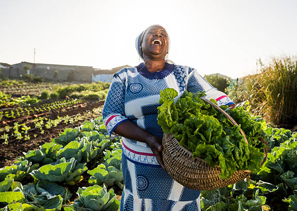
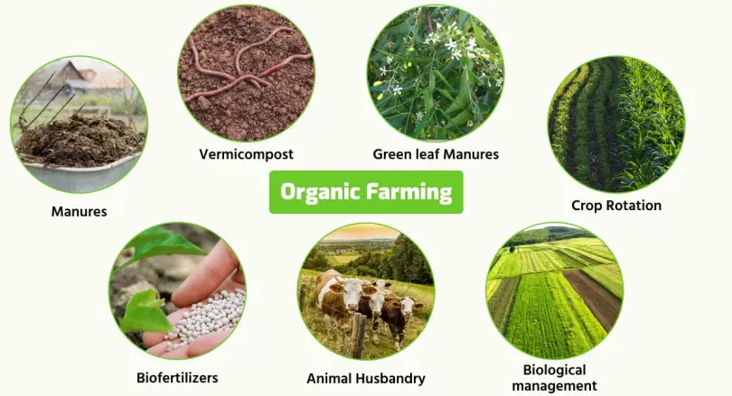
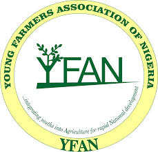

Successful Igala Farmers

Farmer James Okoli
Idah, Kogi State

Farmer Fatima Musa
Ankpa, Kogi State
Farmer Daniel Ode
Anyigba, Kogi State

Farmer Grace Aliyu
Lokoja, Kogi State
Farmer Cooperatives & Groups
Yam Farmers Cooperative
Specializing in yam cultivation and processing

Women in Agriculture Network
Empowering female farmers across Igala land

Organic Farming Collective
Promoting sustainable and organic farming practices

Young Farmers Association
Engaging youth in modern agriculture